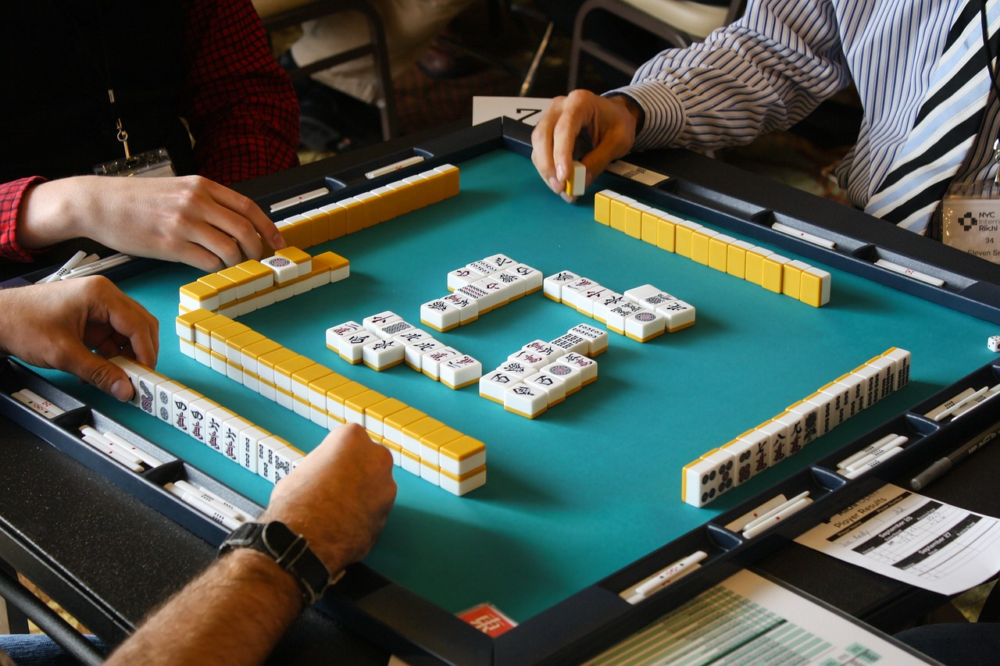

將人 Machill 麻將介紹
麻將作為歷史悠久的傳統遊戲
其優點自是眾人中意才得以在桌遊界屹立不搖

減少科技冷漠：
打麻將時能提升社交互動增進感情，改善現代人的科技冷漠及社恐。 天天摸一圈，親朋好友和樂融融度華年！
活躍腦袋瓜：
打麻將需要記憶力及策略思考，有助於延緩認知衰退、提升專注力。 天天摸一圈，家中長輩快快樂樂到百年！
強化手眼協調：
打麻將過程中的手部動作可提升手眼協調能力及細微動作技能。 天天摸一圈，人人眼疾手快不可言！